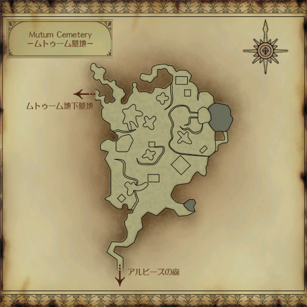

一覧採掘ガイド：ムトゥーム墓地
ムトゥーム墓地 の掘り場 7 か所（岩 40 個）。
掘り場の地図

#1#2#3#4#5緑の点が岩、#番号が掘り場（岩 3 個以上）。点にマウスを合わせると岩の名前。
掘り場
地図の緑の点が岩、赤がプレイヤーを襲うモンスター、灰色が襲わないモンスターの出る位置。
#1（岩 11 個）
- 岩の数
- 11 個（9 か所）
- 広さ
- 34 m
- 間隔
- 5 m
- 再出現
- 60 秒〜50 分
- 岩の Lv
- 21〜49
出るもの
| アイテム | 1 周 | 1 時間に湧く量 |
|---|---|---|
| 黒炭 | 15.64 | 237.1 |
| 鉄鉱石 | 13.44 | 196.6 |
| 鉄鉱石の破片 | 4.72 | 111.1 |
| 木炭 | 2.64 | 50 |
| スズ | 2.16 | 54.4 |
| 銅鉱石 | 1.68 | 42.3 |
| 銀鉱石の破片 | 1.2 | 12.5 |
| 銀鉱石 | 0.2 | 1.1 |
| 金鉱石の破片 | 0.06 | 0.3 |
| エメラルド | 0.02 | 0.4 |
| アクアマリン | 0.02 | 0.4 |
| ルビー | 0.02 | 0.4 |
| サファイア | 0.02 | 0.4 |
| ブラック パール | 0.01 | 0.2 |
| ムーンストーン | 0.01 | 0.2 |
岩
| 出る岩（出るたびに抽選） | 数 |
|---|---|
| 炭の岩石 Lv 21〜22（60%）／鉄の岩石（銅鉱石） Lv 24〜26（20%）／鉄の岩石（鉄鉱石の破片） Lv 27〜29（20%） | 6 |
| 炭の岩石 Lv 31〜32（60%）／銀の鉱石 Lv 34〜35（20%）／鉄の岩石 Lv 37〜39（20%） | 4 |
| 鉄の岩石 Lv 41〜42（60%）／銀の鉱石（銀鉱石の破片） Lv 44〜46（20%）／銀の鉱石（銀鉱石） Lv 48〜49（20%） | 1 |
近くのモンスター
プレイヤーを襲うモンスターは届かない。
| モンスター | Lv | 行動 | 数 | 岩までの距離 | 出かた |
|---|---|---|---|---|---|
| グレイブン ロード | 67 | 友好度次第・リンク | 1 | 0 m | ゲーム内 19時に出現 |
| グレイブン キャプテン | 65 | 友好度次第・リンク | 1 | 4 m | ゲーム内 19時に出現 |
| グレイブン チーフ | 61 | 友好度次第・リンク | 1 | 8 m | ゲーム内 19時に出現 |
| 長老グレイブン | 58〜59 | 友好度次第・リンク | 1 | 0 m | ゲーム内 19時に出現 |
| グレイブン ルーキー | 53〜55 | 友好度次第・リンク | 5 | 0 m | ゲーム内 5時〜19時に出現 |
| グレイブン ウォリアー | 55 | 友好度次第・リンク | 5 | 0 m | ゲーム内 5時〜19時に出現 |
#2（岩 10 個）
- 岩の数
- 10 個
- 広さ
- 38 m
- 間隔
- 5 m
- 再出現
- 5 分〜6 分
- 岩の Lv
- 21〜49
出るもの
| アイテム | 1 周 | 1 時間に湧く量 |
|---|---|---|
| 黒炭 | 15 | 158.2 |
| 鉄鉱石 | 12.84 | 137.5 |
| 鉄鉱石の破片 | 4.04 | 40.7 |
| 木炭 | 2.4 | 25 |
| スズ | 1.8 | 18 |
| 銅鉱石 | 1.4 | 14 |
| 銀鉱石の破片 | 1.2 | 13.2 |
| 銀鉱石 | 0.2 | 2.4 |
| 金鉱石の破片 | 0.06 | 0.7 |
| エメラルド | 0.02 | 0.2 |
| アクアマリン | 0.02 | 0.2 |
| ルビー | 0.02 | 0.2 |
| サファイア | 0.02 | 0.2 |
| ブラック パール | 0.01 | 0.1 |
| ムーンストーン | 0.01 | 0.1 |
岩
| 出る岩（出るたびに抽選） | 数 |
|---|---|
| 炭の岩石 Lv 21〜22（60%）／鉄の岩石（銅鉱石） Lv 24〜26（20%）／鉄の岩石（鉄鉱石の破片） Lv 27〜29（20%） | 5 |
| 炭の岩石 Lv 31〜32（60%）／銀の鉱石 Lv 34〜35（20%）／鉄の岩石 Lv 37〜39（20%） | 4 |
| 鉄の岩石 Lv 41〜42（60%）／銀の鉱石（銀鉱石の破片） Lv 44〜46（20%）／銀の鉱石（銀鉱石） Lv 48〜49（20%） | 1 |
近くのモンスター
プレイヤーを襲うモンスターが届く。
| モンスター | Lv | 行動 | 数 | 岩までの距離 | 出かた |
|---|---|---|---|---|---|
| グリードル | 23〜40 | アクティブ・リンク | 18 | 22 m | |
| グレイブン ロード | 67 | 友好度次第・リンク | 1 | 0 m | ゲーム内 19時に出現 |
| グレイブン キャプテン | 65 | 友好度次第・リンク | 1 | 4 m | ゲーム内 19時に出現 |
| グレイブン チーフ | 61 | 友好度次第・リンク | 1 | 0 m | ゲーム内 19時に出現 |
| 長老グレイブン | 58〜59 | 友好度次第・リンク | 1 | 0 m | ゲーム内 19時に出現 |
| グレイブン ガード | 58〜58.2 | 友好度次第・リンク | 1 | 6 m | |
| グレイブン ウォリアー | 55 | 友好度次第・リンク | 1 | 24 m | ゲーム内 5時〜19時に出現 |
| グレイブン ルーキー | 54〜55 | 友好度次第・リンク | 1 | 2 m |
#3（岩 7 個）
- 岩の数
- 7 個（6 か所）
- 広さ
- 37 m
- 間隔
- 9 m
- 再出現
- 5 分
- 岩の Lv
- 21〜39
出るもの
| アイテム | 1 周 | 1 時間に湧く量 |
|---|---|---|
| 黒炭 | 9.6 | 115.2 |
| 鉄鉱石 | 7.38 | 88.6 |
| 鉄鉱石の破片 | 3.72 | 44.6 |
| 木炭 | 1.44 | 17.3 |
| スズ | 1.08 | 13 |
| 銅鉱石 | 0.84 | 10.1 |
| 銀鉱石の破片 | 0.6 | 7.2 |
| エメラルド | 0.01 | 0.2 |
| アクアマリン | 0.01 | 0.2 |
| ルビー | 0.01 | 0.2 |
| サファイア | 0.01 | 0.2 |
| ブラック パール | 0.01 | 0.1 |
| ムーンストーン | 0.01 | 0.1 |
岩
| 出る岩（出るたびに抽選） | 数 |
|---|---|
| 炭の岩石 Lv 31〜32（60%）／銀の鉱石 Lv 34〜35（20%）／鉄の岩石 Lv 37〜39（20%） | 3 |
| 炭の岩石 Lv 21〜22（60%）／鉄の岩石（銅鉱石） Lv 24〜26（20%）／鉄の岩石（鉄鉱石の破片） Lv 27〜29（20%） | 3 |
| 鉄の鉱石 Lv 25〜26（70%）／鉄の岩石 Lv 30〜31（30%） | 1 |
近くのモンスター
プレイヤーを襲うモンスターは届かない。
| モンスター | Lv | 行動 | 数 | 岩までの距離 | 出かた |
|---|---|---|---|---|---|
| グレイブン ロード | 67 | 友好度次第・リンク | 1 | 4 m | ゲーム内 19時に出現 |
| グレイブン キャプテン | 65 | 友好度次第・リンク | 1 | 3 m | ゲーム内 19時に出現 |
| グレイブン チーフ | 61 | 友好度次第・リンク | 1 | 10 m | ゲーム内 19時に出現 |
| 長老グレイブン | 58〜59 | 友好度次第・リンク | 2 | 3 m | ゲーム内 19時に出現 |
| グレイブン ガード | 55〜55.2 | 友好度次第・リンク | 1 | 9 m | ゲーム内 5時〜19時に出現 |
| グレイブン ウォリアー | 55 | 友好度次第・リンク | 6 | 12 m | ゲーム内 5時〜19時に出現 |
| スカルパス ウォリアー | 55 | 友好度次第・リンク | 2 | 9 m | ゲーム内 19時〜5時に出現 |
| スカルパス メイジ | 55 | 友好度次第・リンク | 2 | 9 m | ゲーム内 19時〜5時に出現 |
#4（岩 5 個）
- 岩の数
- 5 個（4 か所）
- 広さ
- 8 m
- 間隔
- 4 m
- 再出現
- 2 分〜5 分
- 岩の Lv
- 21〜29
出るもの
| アイテム | 1 周 | 1 時間に湧く量 |
|---|---|---|
| 鉄鉱石の破片 | 3.4 | 58.5 |
| 黒炭 | 3.2 | 55 |
| 鉄鉱石 | 3 | 51.6 |
| スズ | 1.8 | 31 |
| 銅鉱石 | 1.4 | 24.1 |
| 木炭 | 1.2 | 20.6 |
| エメラルド | 0.01 | 0.1 |
| アクアマリン | 0.01 | 0.1 |
| ルビー | 0.01 | 0.1 |
| サファイア | 0.01 | 0.1 |
岩
| 出る岩（出るたびに抽選） | 数 |
|---|---|
| 炭の岩石 Lv 21〜22（60%）／鉄の岩石（銅鉱石） Lv 24〜26（20%）／鉄の岩石（鉄鉱石の破片） Lv 27〜29（20%） | 5 |
近くのモンスター
届くモンスターはいない。
#5（岩 5 個）
- 岩の数
- 5 個
- 広さ
- 26 m
- 間隔
- 9 m
- 再出現
- 5 分〜7 分
- 岩の Lv
- 21〜41
出るもの
| アイテム | 1 周 | 1 時間に湧く量 |
|---|---|---|
| 鉄鉱石 | 4.1 | 43.4 |
| 黒炭 | 2.86 | 33.3 |
| 鉄鉱石の破片 | 2.72 | 32.6 |
| スズ | 1.44 | 17.3 |
| 銅鉱石 | 1.12 | 13.4 |
| 木炭 | 0.96 | 11.5 |
| エメラルド | 0.01 | 0.1 |
| アクアマリン | 0.01 | 0.1 |
| ルビー | 0.01 | 0.1 |
| サファイア | 0.01 | 0.1 |
岩
| 出る岩（出るたびに抽選） | 数 |
|---|---|
| 炭の岩石 Lv 21〜22（60%）／鉄の岩石（銅鉱石） Lv 24〜26（20%）／鉄の岩石（鉄鉱石の破片） Lv 27〜29（20%） | 4 |
| 鉄の岩石 Lv 30〜31（70%）／カーボンの鉱石 Lv 40〜41（30%） | 1 |
近くのモンスター
プレイヤーを襲うモンスターが届く。
| モンスター | Lv | 行動 | 数 | 岩までの距離 | 出かた |
|---|---|---|---|---|---|
| シャドウナイト | 150 | アクティブ・リンク | 1 | 8 m | |
| グレイブン ウォリアー | 55 | 友好度次第・リンク | 1 | 25 m | ゲーム内 5時〜19時に出現 |
| グレイブン ルーキー | 53 | 友好度次第・リンク | 2 | 20 m | ゲーム内 5時〜19時に出現 |
小さな掘り場（岩 1〜2 個）
位置は、地図の絵で見たときの一番近い番号付きの掘り場からの向きと直線距離。
| 掘り場 | 岩 | 位置 | 出る岩 | 再出現 | 1 周で出るもの | 近くの敵 |
|---|---|---|---|---|---|---|
| #6 | 1 | #1 の右上 30 m | 炭の岩石 Lv 21〜22（60%）／鉄の岩石（銅鉱石） Lv 24〜26（20%）／鉄の岩石（鉄鉱石の破片） Lv 27〜29（20%） | 3 分 | 鉄鉱石の破片 0.7、黒炭 0.6、鉄鉱石 0.6、スズ 0.4 | なし（友好度次第：グレイブン ウォリアー） |
| #7 | 1 | #3 の右 23 m | 炭の岩石 Lv 21〜22（60%）／鉄の岩石（銅鉱石） Lv 24〜26（20%）／鉄の岩石（鉄鉱石の破片） Lv 27〜29（20%） | 5 分 | 鉄鉱石の破片 0.7、黒炭 0.6、鉄鉱石 0.6、スズ 0.4 | なし（友好度次第：グレイブン ウォリアー） |